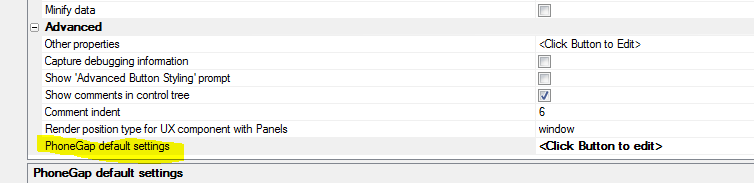
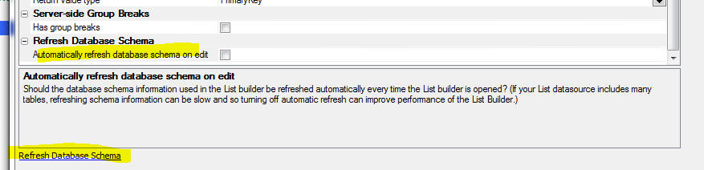
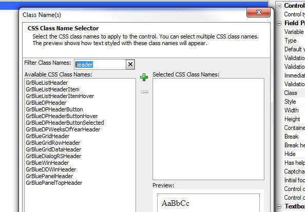

This document describes the updates and fixes made to Alpha Anywhere since its initial release.
To see the 'What's New in V12' document (which describes all of the new features in Alpha Anywhere's initial release) please click here.
Please note that Alpha Anywhere patches are only available to users with
a current subscription.
You can verify your subscription status from within Alpha Anywhere by
going to Help, About, or by clicking this link shown here (https://activation.alphasoftware.com/subscriptionStatus.aspx).
If you install an update for which your subscription is not entitled,
you will need to uninstall the update and rollback to an older version
that you are authorized to use in order to continue using Alpha
Anywhere.
In addition to the official updates that Alpha Software makes available from time to time (which are described in this document), we also make available our internal pre-release builds that allow you to see what features have been added and what bugs have been fixed since the last official update. The features and bug fixes in the pre-release build will be part of the next official update. To see the pre-release notes, please click here.
UX Component - PhoneGap Applications - Setting Default Properties for the PhoneGap Genie - When you build a PhoneGap application it is critical that you turn on all of the required plug-ins for your application in the PhoneGap Build Project Settings genie.
Now, a new property in the UX Builder allows you to specify that certain PhoneGap settings should be automatically set when a PhoneGap application is built using a particular component.

When you click the smart field for the PhoneGap default settings property, a dialog is shown where you can set certain PhoneGap Builder properties. When you open the PhoneGap genie, the corresponding properties in the builder will automatically be set.
UX Component - List Builder - Refresh Database Schema - By default when you edit a List that is based on one or more SQL tables, the database schema information is refreshed every time you click OK to exit the List builder. In most cases, if your database is local, the time taken to refresh the database schema is negligible. However, if your List is based on one or more tables in a remote SQL database, the time taken to refresh the schema can be significant.
A new property Automatically refresh database schema on edit allows you to turn off the automatic refresh of schema information when the List builder is opened. If you subsequently change the structure of any of the tables that the List is based on you should click the 'Refresh Database Schema' link shown below.

type::Definition::Exists(
Syntax
L flag = type::Definition::Exists("mynamespace::mytype")
This method is particularly useful for checking if a .NET dll has been successfully registered.
UX Component - List Control - SQL Data Source - Group By in SQL - Filter List - If a List control is based on a SQL statement that uses the GROUP BY clause and the UX contains a button to filter the list, if a filter is defined on any of the summary fields in the SQL statement, an appropriate HAVING clause will now be generated.
UX and Grid Component - Class Name Selector - Filter - When you bring up the Class Name selector dialog you can now filter the list of CSS class names to make finding the class name you want easier.

UX and Grid Component - Javascript Actions - Filter List Of Actions - If you opened the Javascript Actions dialog and you applied a filter to filter the list of actions shown in the window, then clicked the OK button without first clearing the filter, the actions that were excluded by the filter were permanently deleted.
UX Component - Pre-render at Design-Time - {dialog.object}.getParentObject() - If a child UX (that is pre-rendered at design-time) was opened by a parent Grid or UX component, the {dialog.object}.getParentObject() method did not return the correct value.
UX Component - Pre-render at Design-Time - Session Timeout Warning - Was not working if the UX was pre-rendered at design-time.
UX Component - Pre-render at Design Time - 3rd Party CSS Icons - Working Preview - If your UX included any 3rd party CSS icons (e.g. FontAwesome, Fontello, etc.) these icons did not display in working preview if the UX was pre-rendered at design-time.
UX Component - Spin Lists - Percentage Width - If the width of a Spin List control was set to a percentage value (e.g. 50%), the width setting was not correctly applied. NOTE: To see the fix you will need to edit any property on the Spin List control to cause the generated code to be recalculated.
UX Component - Google Map - Getting a Pointer to the Low Level Map Object - The UX component allows you to place a Map control on the UX. Alpha Anywhere creates a map object that has many methods (such as placing markers on the map). Behind the scenes, the Alpha Anywhere map object just calls methods of the underlying Google Map object.
In some cases you might want to get a pointer to the underlying Google map object so that you can invoke methods on it directly. For example, you might have read about some feature in the Google Map API documentation that is not implemented in the Alpha Anywhere map object. Getting a pointer to the underlying Google Map object will allow you to implement any feature you might read about in the Google Map API documentation.
Here is how you can get a pointer to the Google Map object:
// get a pointer to the Alpha Anywhere map object
//assume your map control is called 'MYMAP1'
var mObj = {dialog.object}.getControl('MYMAP1');
//now get a pointer to the underlying Google Map object
var gMap = mObj.map;